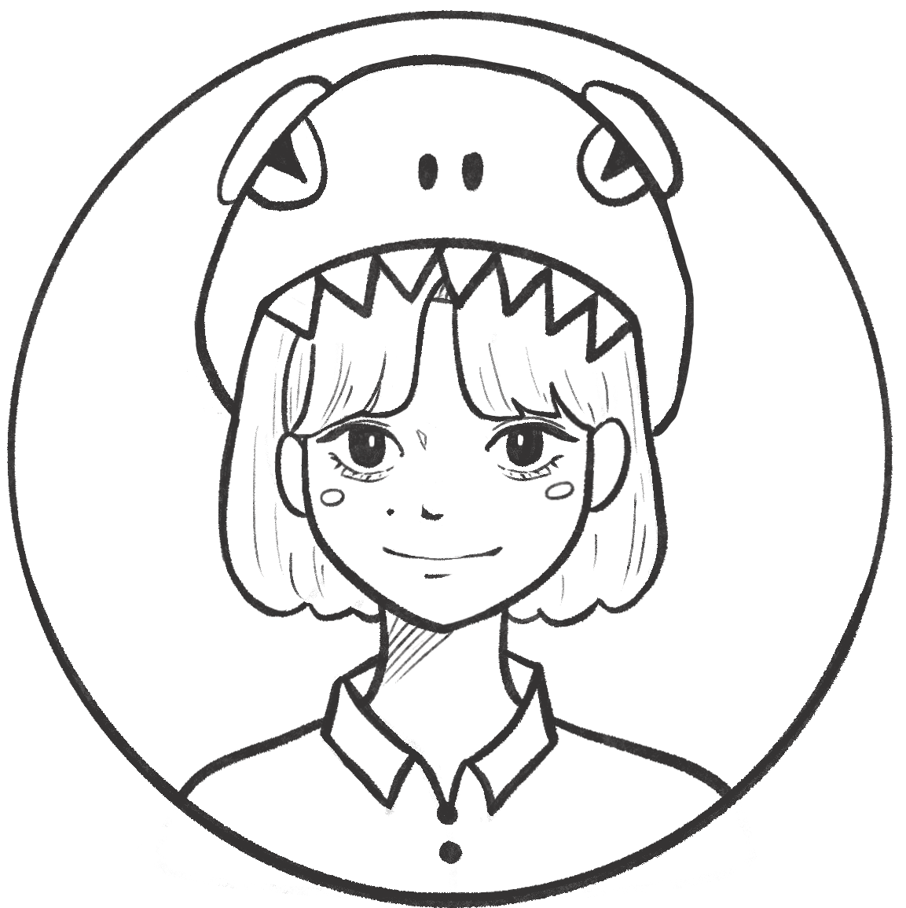
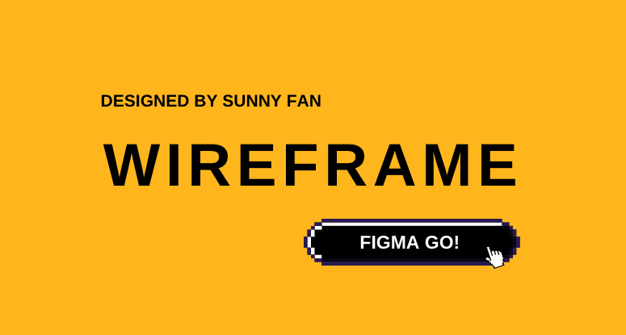
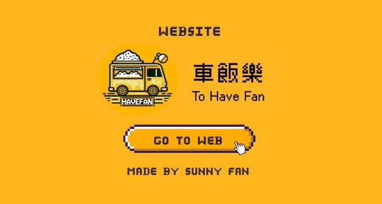
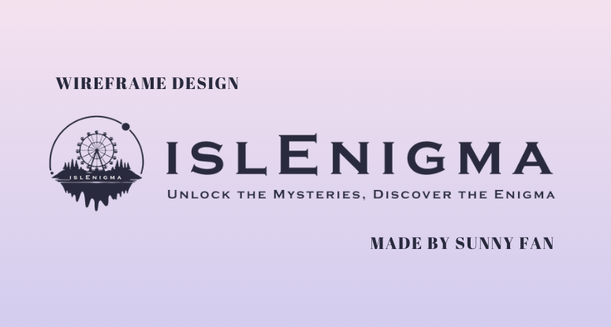
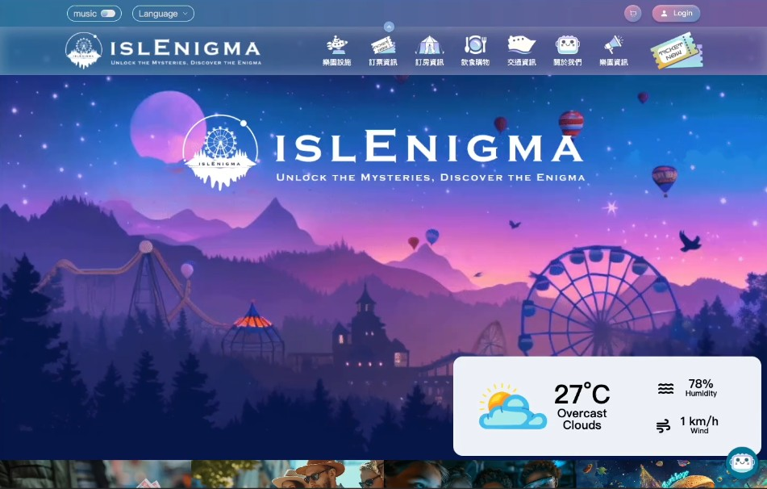
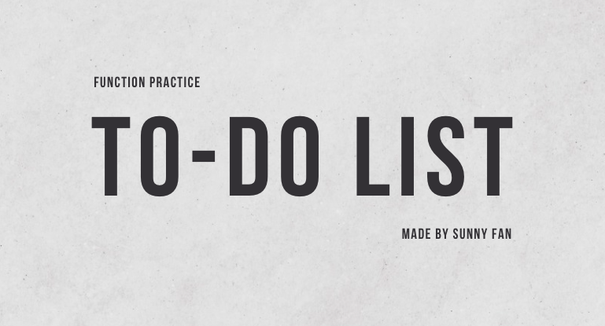
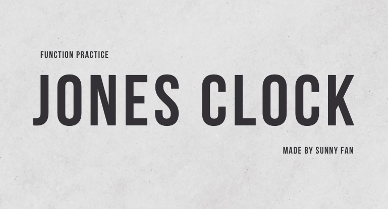

FAN WORLD
INFO

Fan Hui Ching 范惠晴
前端工程師
您好，我擁有一年網站企劃／客服經驗，我具備良好溝通能力、問題解決能力、跨部門合作能力，執行超過上百位客戶的網站版面、功能修改，完整呈現客戶需求。除了培養出我優秀設計美感及
UX 規劃能力，也燃起我對前端學習的熱情。我相信我在前端工程師就業養成班所學的技術，能夠創造出良好使用者體驗的網站和功能，並持續在此領域中保持積極學習新事物的心。
EXPERIENCE
前端學習
Front-end Learning Process-
2024.04 ~ 2024.08前端工程師就業養成班iSpan資展國際股份有限公司
工作經歷
WORK EXPERIENCE-
2023.03 ~ 2024.02網站企劃／客服／影片剪輯愛貝斯網路有限公司
-
2022.07 ~ 2022.11國貿業務弘展切削工具有限公司
-
2020.02 ~ 2021.01職場英文教學助理國立雲林科技大學語言中心
教育程度
education-
2018.09 ~ 2022.06國立雲林科技大學 應用外語系
SCROOL DOWN ⮕

Figma 設計稿
SEE MORE ▶
分析日本購物網站架構，製作電腦版以及行動裝置版之網站設計稿，運用 Prototype 製作區塊元件，並完成互動式動態效果。

餐車品牌網站
SEE MORE ▶
車飯樂為一個虛擬餐車品牌，網站視覺風格以像素 Pixel 風格為主，採用明亮黃色為品牌識別色。使用
HTML、CSS、JavaScript 製作而成，為全手刻的 RWD 網站。

拼圖小遊戲
SEE MORE ▶
便當拼圖靈感來自於 Line 組合貼圖透過滑鼠拖曳
可將右側配菜移至左側便當盒中，客製出屬於自己的便當配菜
可將右側配菜移至左側便當盒中，客製出屬於自己的便當配菜

Figma 設計稿
SEE MORE ▶
謎樣島嶼 islEnigma 為虛擬海島型遊樂園，網站風格走向為迷幻感，色系則以藍紫漸層色為主。

遊樂園網站設計
SEE MORE ▶
在「謎樣島嶼 islEnigma 」專案中，我們組別除了使用 HTML、SCSS、JavaScript 、jQuery、Bootstrap 網格，更結合 React
框架製作網站單元的共同元件。

To-Do List 功能
SEE MORE ▶
自己習慣用便條紙寫每日代辦事項，但自己寫一個小功能也完全沒問題！
練習將資料存在 local storage
使用 tiny date picker 日曆顯示當日日期

圓形時鐘
SEE MORE ▶
一個 function 做一件事情，此小作品幫助我學會如何將複雜的功能拆成小功能。
練習指針定位和旋轉的角度
練習抓取現在時間
試著將結果以時鐘的樣式呈現